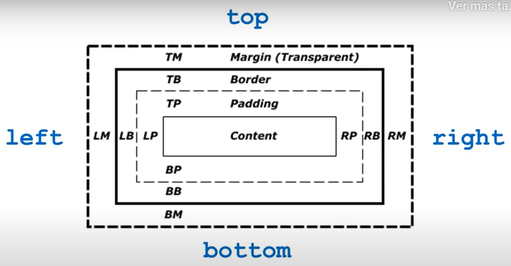
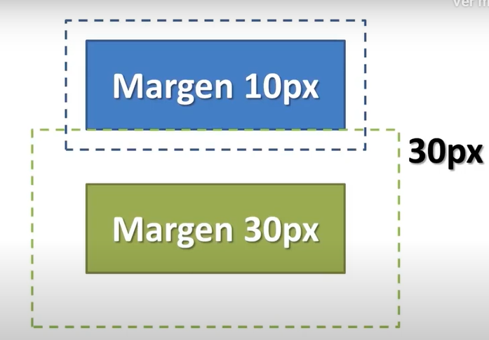

El modelado de caja se define en la siguiente imagen:
Como se puede observar los elementos se encuentran de la siguiente manera:
Nota: el atributo width y height solo se utilizan para el contenido y no tiene nada que ver con el padding, border y el margin
Para definir este concepto basta con simplificarlo en una imagen:
Como se puede apreciar cuando 2 margenes se encuentran se superpone el margen con mayor tamaño y no asi la sumatoria de ambos como se podria suponer
Este párrafo tiene margen de 10px
Este párrafo tiene margen de 20px
Este párrafo tiene margen de 30px